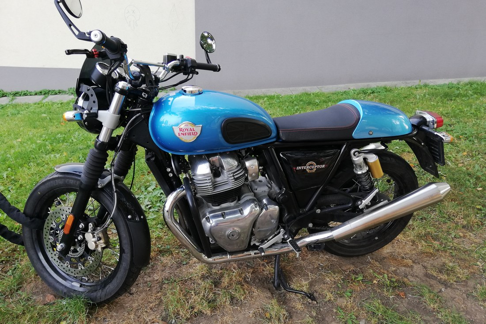

Taller › Interceptor 650
Taller · Dinámica y customización
Royal Enfield Interceptor 650: cualidades dinámicas y piezas performance
Una roadster retro con un chasis ágil y un motor con buen medio, lastrada de serie por frenos y suspensiones discretos. Este es el mapa de mejora del aftermarket internacional: escape, admisión, motor, electrónica, suspensión, frenos y transmisión, con precios de referencia.

Sobre el motor: la Interceptor 650 (2019 en adelante) monta el bicilíndrico paralelo de 648 cc refrigerado por aire/aceite (SOHC, 4 válvulas por cilindro, inyección), con cigüeñal a 270º que le da un tacto y un sonido cercanos a un V-twin. Entrega 47 CV a 7.250 rpm y 52 Nm a 5.250 rpm: poco para autovía sin más, pero con un medio lleno que en carretera de curvas se disfruta.
Cualidades dinámicas de serie
- Posición de conducción: asiento a 804 mm, manillar ancho y estriberas centradas. Postura erguida y relajada, ideal para el día a día y para viajes de media distancia.
- Chasis y peso: cuna tubular de acero y unos contenidos 202 kg en orden de marcha. Se trae y se tumba con facilidad; la distancia entre ejes de 1.400 mm da estabilidad sin hacerla torpe.
- Motor en el medio: el par llega pronto (52 Nm a 5.250 rpm), el 270º hace que tire desde bajas vueltas y la 6.ª es larga para rodar tranquilo. A altas vueltas aparecen vibraciones notables en manillar y estriberas.
- En autovía: mantiene 120-130 km/h de crucero, aunque sin reserva para adelantamientos bruscos; no es su terreno.
- Limitaciones de serie: la horquilla de 41 mm no es regulable y con su muelle blando se hunde en frenadas fuertes; los dos amortiguadores traseros son básicos (solo precarga en 5 posiciones); los frenos ByBre cumplen pero con mordiente mejorable y mangueras de goma; y las llantas de 18” reducen la oferta de neumáticos frente a las de 17”.
Ese último punto es justo el atractivo del modelo: es un lienzo. Casi todas las limitaciones de serie tienen una solución probada en el aftermarket, y la plataforma 650 es compartida con la Continental GT, la Super Meteor y la Bear 650, por lo que el catálogo de piezas es enorme.
Mejoras por categorías
Escape
El escape de serie es pesado y restrictivo. Es la mejora más habitual por su efecto en sonido, peso y respuesta. Las opciones más documentadas:
- TEC 2-1 Stinger (£283): el 2-1 más popular para las 650. Aligera unos 5 kg, sube potencia en el rango alto y mejora el reparto de par. Requiere gestor o BoosterPlug para sacarle partido sin mezcla pobre.
- TEC Big Bore ‘Cannons’ (slip-on, £233 el par): montaje directo sobre los colectores de serie, muy buen sonido y ahorro de peso a menor coste.
- TEC Full Big Bore stainless (£390-400) y colectores 2-2 big bore (£150): el paso completo de gran diámetro, pensado para el kit de culatas y big bore.
- S&S Qualifier 2-1 Race (£558): opción de competición, con mayor ganancia y más exigente con la electrónica.
- Otras marcas con kit para las 650: Zard, LeoVince, Motad, BAAK, AEW, Kess Tech o los propios de Hitchcock’s.
Admisión
- DNA High Flow Filter + placa de admisión (combo £62; filtro £49; placa £21): filtro lavable de alto flujo y placa que abre la entrada de aire. Mejora la respiración y queda bien con escape y BoosterPlug.
- Alternativas: K&N y BMC con elementos específicos para el modelo.
- Filtro de aceite (p. ej. el de TEC, £14) y bujías (Bosch UR5CC, £9) como primer paso barato de mantenimiento.
Electrónica e inyección
La ECU de serie cierra el círculo: con escape y admisión mejorados, la mezcla se empobrece. Hay tres vías, de menos a más intrusivas:
- BoosterPlug (£112): conecta en el sensor de temperatura de admisión y enriquece la mezcla de forma plug&play. La opción más sencilla y la más usada junto al 2-1 de TEC; no toca el resto de la curva.
- Power Commander (Dynojet) o Powertronic: gestores con mapas descargables, más flexibles si se combinan big bore, culatas y árboles de levas.
- Remap de ECU o ECU S&S: la vía más completa, sobre todo con las piezas grandes de S&S; requiere taller o banco de potencia.
Motor
- Árbol de levas S&S Cycle (£171): mejora el llenado en el rango medio-alto; ganancia sensible cuando ya hay escape y admisión.
- Kit big bore 865 cc (S&S, Hitchcock’s y otros): pistones, camisas y, según kit, culatas. Lleva el motor a unos 65-70 CV. Es el salto grande: requiere gestión electrónica y, recomendable, banco.
- Pistones de alta compresión y culatas portadas como escalón intermedio para quien no quiere abrir el cárter por completo.
Suspensiones
El punto que más cambia el comportamiento. El orden recomendado: primero muelles/emuladores en la horquilla, después amortiguadores traseros.
- Emuladores de horquilla (TEC, £75) + muelles progresivos (£58): convierten la horquilla de serie en regulable en compresión, eliminando el hundimiento bajo frenada.
- Kit completo de horquilla TEC (£117, muelles progresivos + reguladores de precarga superiores) o kit YSS (£192): la actualización más equilibrada en relación calidad/precio.
- Amortiguadores traseros: los de serie con precarga solo maquillan. YSS, Hagon, Nitron, Öhlins y BC Racing tienen unidades a medida de la 650, con precarga, compresión y rebote regulables. Es, junto a la horquilla, la mejora que más notarás en carretera.
Frenos
- Pastillas sinterizadas EBC HH (traseras £21, delanteras equivalentes): más mordiente y constancia en caliente, cambio directo.
- Mangueras trenzadas (Hel, Goodridge, Venhill): eliminan el tacto esponjoso de las de goma; el freno delantero de disco de 320 mm (pinza flotante ByBre de 2 pistones) mejora mucho con esto solo.
- Para más, pinzas Brembo o radiales con adaptadores y discos sobredimensionados; aquí ya se sale del rango razonable para la potencia de la moto.
Transmisión y ruedas
- Piñón de 16 dientes (£17) en la salida de cambio: acorta el desarrollo y da más respuesta en ciudad y carretera de curvas a costa de algo de velocidad punta. Barato y muy popular.
- Kits de cadena y corona, y llantas más ligeras para reducir el peso no suspendido (la 650 trae llantas de fundición de 18”; también hay opciones de radios).
Tabla resumen de piezas y precios de referencia (TEC Bike Parts)
| Categoría | Pieza / marca | Notas | Precio TEC |
|---|---|---|---|
| Escape | TEC 2-1 Stinger | El más popular; -5 kg aprox., mejor llenado alto | £283 (≈ 330 €) |
| Escape | TEC Big Bore Cannons (slip-on, par) | Montaje directo sobre colectores de serie | £233 (≈ 272 €) |
| Escape | TEC Full Big Bore stainless | Sistema completo de gran diámetro | £390-400 (≈ 455-465 €) |
| Escape | S&S Qualifier 2-1 Race | Opción de competición | £558 (≈ 650 €) |
| Admisión | DNA filtro + placa de alto flujo | Combo; también por separado | £62 (≈ 73 €) |
| Electrónica | BoosterPlug fuel booster | Enriquece mezcla, plug&play | £112 (≈ 131 €) |
| Motor | S&S Cycle árbol de levas | Mejor llenado medio-alto | £171 (≈ 199 €) |
| Motor | Kit big bore 865 cc (S&S / Hitchcock’s) | Lleva a ~65-70 CV; requiere gestor | Bajo presupuesto |
| Suspensión | Emuladores de horquilla TEC + adaptadores | Regulables en compresión | £75 (≈ 87 €) |
| Suspensión | Muelles progresivos TEC | Fin del hundimiento en frenada | £58 (≈ 68 €) |
| Suspensión | Kit completo horquilla TEC (muelles + precarga) | La actualización más equilibrada | £117 (≈ 136 €) |
| Suspensión | Kit horquilla YSS | Alternativa de gama alta | £192 (≈ 223 €) |
| Suspensión | Amortiguadores traseros YSS/Hagon/Nitron | Regulación completa; a medida | Bajo presupuesto |
| Frenos | Pastillas EBC HH sinterizadas | Más mordiente y constancia | £21 (≈ 24 €) |
| Frenos | Mangueras trenzadas (Hel, Goodridge) | Mejor tacto; combinadas con EBC | Bajo presupuesto |
| Transmisión | Piñón de 16 dientes | Desarrollo más corto, más respuesta | £17 (≈ 19 €) |
Ficha técnica del motor
| Cilindrada | 648 cc (78,0 x 67,8 mm), compresión 9,5:1 |
| Distribución | 4T, SOHC, 4 válvulas por cilindro, inyección, cigüeñal 270º |
| Refrigeración | Aire/aceite |
| Potencia | 47 CV (35 kW) a 7.250 rpm |
| Par | 52 Nm a 5.250 rpm |
| Transmisión | 6 marchas, transmisión final por cadena |
| Suspensión | Horquilla 41 mm no regulable (110 mm) / dos amortiguadores con precarga (88 mm) |
| Frenos | Disco 320 mm con pinza ByBre 2 pistones / disco 240 mm 1 pistón; ABS Bosch |
| Ruedas | 18”; 100/90-18 del., 130/70-18 tras. |
| Peso / depósito | ≈ 202 kg en orden de marcha / 13,7 L |
Fuentes
- TEC Bike Parts — Performance Parts Interceptor 650 (pág. 1)
- TEC Bike Parts — Performance Parts Interceptor 650 (pág. 2)
- Hitchcock’s Motorcycles (Reino Unido) — accesorios Interceptor 650
- Wikipedia — Royal Enfield Interceptor 650
- Wikimedia Commons — foto de Mojmir Churavy (CC BY-SA 4.0)

Precios orientativos publicados por TEC Bike Parts (Reino Unido, 2026) en libras sin IVA ni envío; conversión a euros aproximada a 1,17. Los kits big bore, amortiguadores y mangueras se indican como «bajo presupuesto» por variar mucho con marca y configuración. Las modificaciones de escape, motor y electrónica pueden afectar a la garantía, a la homologación (catalizador y ruido) y a la normativa de emisiones: comprueba siempre la legalidad en tu país antes de montar.